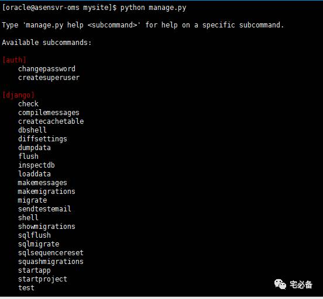
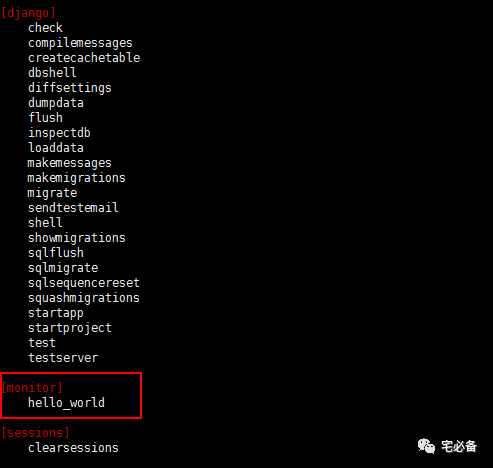
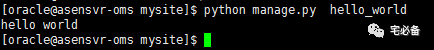

让Django运行自定义命令
这节讲述如何运行自定义命令
这个专题主要内容有：
-
如何新建自定义命令
-
如何使用自定义命令获取Oracle监控指标并写入数据库
-
如何将获取到的数据库监控指标在前端显示
开发环境
操作系统:CentOS 7.3
Python版本 :2.7
Django版本: 1.10.5
操作系统用户:oracle
何时用到自定义命令
我们在使用Django的过程中是否有这样的困惑
我们在model中定义的数据表如何才能取出来供我们使用呢
是否可以不用第三方模块呢
这些都可以在自定义命令中得到解决
使用自定义命令的最常用的用途为可以直接使用Django model中定义的数据
就像前面执行Oracle命令中view.py中的语句，可以直接调用而不需要使用额外的第三方模块
def oracle_command(request):
result=oraclelist.objects.all().order_by('tnsname')
dic={'result':result}
return render_to_response('oracle_command.html',dic)
如上图result就是取oraclelist表中的所有数据
何为自定义命令
Django内置提供了一些功能如开启web服务，迁移数据库等命令
我们在mysite目录下运行python manage.py命令会输出Django提供的内置的命令

上面显示出的命令即为内置的命令
而自定义命令如下图

上图圈出来的hello_world即为我们今天介绍的自定义命令
如何建立自定义命令
下面我们来说如何使python manage.py命令识别出我们的自定义命令
根据前面的章节，我们app的路径为 /home/oracle/mysite/monitor
主要分为2步
1.我们需要建立两个目录
[oracle@asensvr-oms]mkdir -p /home/oracle/mysite/monitor/management/commands
2.再在两个目录新建init文件,内容为空
[oracle@asensvr-oms ]$ touch /home/oracle/mysite/monitor/management/__init__.py
[oracle@asensvr-oms ]$ touch /home/oracle/mysite/monitor/management/commands/__init__.py
到这里我们已经完成了前置的工作
3.接下来我们编写一个hello world 程序来测试下
注意:我们所有的自定义命令需要全部在commands目录下
[oracle@asensvr-oms commands]$ vim hello_world.py
from django.core.management.base import BaseCommand
from django.contrib.contenttypes.models import ContentType
from monitor.models import oraclelist
class Command(BaseCommand):
def handle(self, *args, **options):
print 'hello world'
前面2行为导入需要的模块
第三行为导入model中定义的oraclelist表
下面2行为固定格式，请不要变更
我们的程序写在handle函数下面
运行命令
这时我们就可以用python manage.py命令运行我们的命令了

源码位置
源码请查看我的主页
https://github.com/bsbforever/wechat_monitor
好了，这节介绍了如何新建一个简单的自定义命令
下节将介绍如何利用自定义命令获取Oracle数据库指标并保存在MySQL数据库中